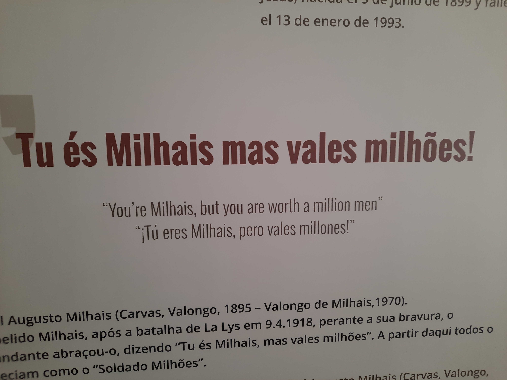
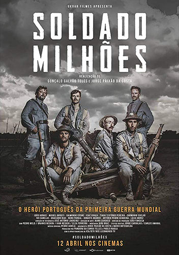
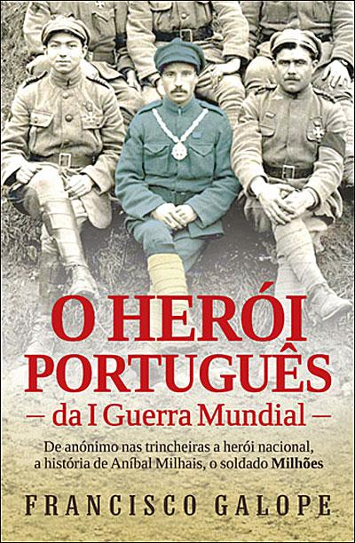
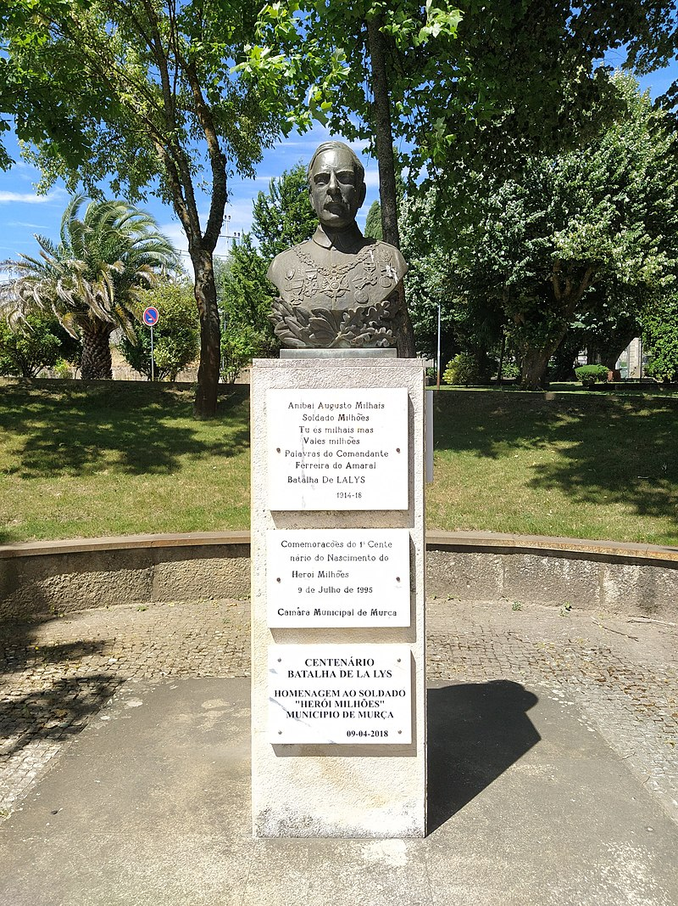

LEGADO
A história de Milhais foi de tal maneira marcante que criou um legado extenso de homenagens e condecorações. Estes vindos de várias áreas diferentes.
Perante a bravura de Milhais, o comandante abraçou-o e exclamou a expressão que ficaria o legado de Aníbal:
" Tu és Milhais mas vales milhões! "
A partir daí, Milhais ficou conhecido por Soldado Milhões. Com vários dos seus descendentes a manterem esse tal nome de familia em vez do original de Milhais.
Em 5 de julho de 1924 o Parlamento alterou o nome da povoação de Valongo, para Valongo de Milhais, em homenagem ao herói onde lá tinha nascido.
Outra homenagem seria a Medalha do Soldado Milhões, Câmara Municipal de Murça do escultor Laureano Eduardo Pinto Guedes (1970).
Criou-se também em Murça, sendo a localidade onde nasceu, um Busto do Soldado Milhões, na Praceta Herói Milhões em Murça do escultor Laureano Eduardo Pinto Guedes (1972-1973).
A casa onde nasceu foi transformada em museu inaugurado em 10 de abril de 2023, pelo presidente da república Marcelo Rebelo de Sousa.
Verifica-se ainda a exposição permanente do espólio (pistola, caderneta militar e medalhas) no Museu Militar do Porto.
Pelos seus feitos militares, Milhais recebeu também várias condecorações devido aos seus contributos na batalha de La Lys. Recebendo 4 condecorações nacionais e 2 estrangeiras.
CONDECORAÇÕES NACIONAIS
- Cavaleiro da Antiga e Muito Nobre Ordem Militar da Torre e Espada, do Valor, Lealdade e Mérito de Portugal (1918/08/31)
- Medalha Militar da Cruz de Guerra de 1.ª Classe de Portugal (1918)
- Medalha da Vitória de Portugal (1919)
- Medalha Comemorativa das Campanhas – França 1917-1918 de Portugal (1919)
CONDECORAÇÕES ESTRANGEIRAS
Cavaleiro da Ordem Nacional da Legião de Honra de França (1918)
Medalha de Ouro da Ordem de Leopoldo II da Bélgica (1918)
NA BANDA DESENHADA
O Soldado Milhões, de Augusto Trigo, baseado num texto de A. Guilhermino Pires, Jornal do Exército nº 335 (1987/88)
NO CINEMA
Soldado Milhões (Ukbar Filmes, 2018)
NA LITERATURA
Milhões: Tragicomédia em 2 Atos, de José Leon Machado. Edições Vercial: Braga, 2018.
   